Chapter 4
Detection and tracking of UAVs using an interferometric radar
4.1 Background
As mentioned in the first chapter of this book,* it is urgent to develop effective countermeasures, such as unmanned aerial vehicle (UAV) detection, localization, tracking, recognition and interception systems, to eliminate the potential risks caused by UAVs [3,4]. A radar exhibits unique advantages for the detection and tracking of UAVs and lends itself well to a potentially effective countermeasure for UAVs [5–7].
However, the detection and tracking of UAVs are not that easy as they seem, as UAVs are usually small-sized and flying relatively slow at a low altitude compared with other air targets [8–10]. Small UAVs are flexible in manoeuvring various motions and swift course change, such as hovering, turning or circling; thus it is difficult to track the UAV due to lack of sufficient motion information and feasible mathematical models. As the radar cross section (RCS) of UAVs is comparable to that of flying birds, the distinguishing of UAVs from other air targets is also a challenging task [11,12]. Conventional Doppler radars may fail when dealing with UAV detection and tracking, as they only provide one-dimensional (1-D) motion information along the radial direction. When UAVs are circling around the observing radar, their radial movement is too small to be detected by Doppler radar. We have shown in [13,14] that the motion information along radial and angular directions are complementary: when the motion along one direction is small; conversely, the other is obvious. For two-dimensional (2-D) UAV trajectory tracking, the most concerned information is the angle of the moving target relative to the observing radar. In addition to that, angular velocity is also necessary for UAV tracking. Although a timely update of angle estimation is a substitute of angular velocity, the low update rate is not adequate for real-time tracking. Subsequently, some new methods for UAV detection and tracking are proposed in the literature, such as multi-static radars in [15] and multiple-input–multiple-output (MIMO) radars in [16–18]. However, it is difficult to maintain accurate synchronization for multi-static radars in practical implementation, while MIMO radar suffers from the compromise between prohibitive cost and high spatial resolution.
An interferometric radar is capable of providing both radial and angular velocity information in addition to the 2-D position calculated from range and angle [1,2,13,14,19,20], where radial velocity and angular velocity are proportional to Doppler and interferometric frequency, respectively. Comparing with multi-static radars, the signal acquisition and processing of all receiving channels of interferometric radars are conducted referring to the same clock. While different from MIMO radars, the application of interferometry renders the spanning of a larger aperture with a very small number of antennas, in turn achieving high spatial resolution. This chapter investigates the problem of UAV detection and tracking using an interferometric radar, equipped with one transmitting antenna and two widely spaced receiving antennas. UAV detection and tracking are completed by extracting the information of 2-D position and 2-D velocities from interferometric radar measurements. The range and radial velocity of UAVs can be estimated by performing respective fast-time and slow-time fast Fourier transform (FFT) to the received data of each channel. As mentioned earlier, 1-D information is far below the requirement when it comes to detecting and tracking UAVs, which are flexible in manoeuvring various motions and swift course change. Fortunately, we can estimate the angle and angular velocity of UAVs from the interferometric measurement. We then propose to track the UAV by predicting the next position with the information of range, angle and 2-D velocities, namely radial and angular velocities, in this chapter. Extensive simulation and experimental results are presented to validate the effectiveness of the method.
The remaining part of this chapter is organized as follows. An introduction of interferometry theory is provided in Section 4.2. The UAV detection is solved in Section 4.3. The proposed UAV tracking method is delineated in Section 4.4. Simulation and experimental results are presented in Sections 4.5 and 4.6, respectively.
4.2 Theory of interferometry
Interferometry is a processing technique which correlates the signals from different samples or sensors to calculate the phase difference and then extract useful information. By widely spacing the sensors and forming a large baseline, a high accuracy of transversal velocity estimation is achieved. Next, we elaborate on the basic interferometry principle in detail.
Consider a radar with one transmitter and two nominally identical receiving antennas observing a far-field monochromatic point scatterer, with the beam covering the interested field of view (FoV). The baseline, which is the distance between two receivers, is  , and the transmitter is in the middle of two receivers. The configuration of the interferometric radar system is illustrated in Figure 4.1.
, and the transmitter is in the middle of two receivers. The configuration of the interferometric radar system is illustrated in Figure 4.1.
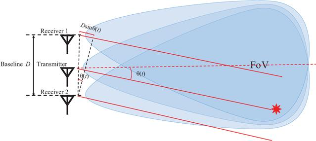
Figure 4.1 Interferometric radar system with one transmitter and two receivers
Assume that the transmit signal at time instant
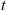
is denoted as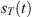
. For a UAV target located in the far field, where its range relative to the transmitter is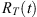
, and its angle relative to the radar boresight is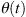
. The transmit signal propagates in the space and reaches the target. A small portion of the transmit energy is then backscattered to two receivers, and the two received signals are denoted as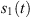
and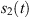
, respectively. The range of the target relative to the receivers can be derived from a simple geometric relationship as follows: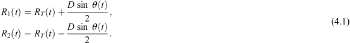
The time delay corresponding to the wave propagation path can be expressed by
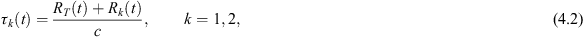
where  is the speed of light. The difference of time delay further induces the phase difference between two receivers, which is determined by
is the speed of light. The difference of time delay further induces the phase difference between two receivers, which is determined by
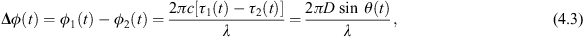
where  corresponds to the wavelength of carrier frequency. Hence, we can estimate the angle
corresponds to the wavelength of carrier frequency. Hence, we can estimate the angle
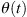
of the target by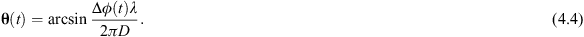
The phase difference can be obtained by taking the phase of the interferometric measurement
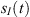
, which is the expectation of correlation between two receiving signals. That is,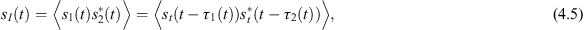
and
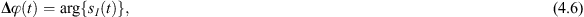
where
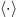
represents the expectation operation and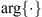
denotes the argument or phase of a complex variable. The expectation here can reduce the noise level caused by non-linear correlation operation. Combining (4.4), (4.5) and (4.6),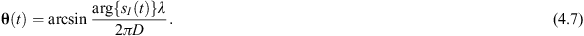
In order to obtain high spatial resolution, the baseline of the interferometer is normally far larger than the wavelength, thereby introducing the phase ambiguity in the measurable range of
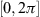
. A number of phase unwrapping methods are proposed in the literature to estimate the ambiguity number, such as second-order difference array (SODA), SODA-based interferometry, correlative interferometer, common angle search and phase line length matching [21–29]. However, all these methods require additional receivers to resolve the phase ambiguity, which is not applicable to the configuration of one transmitter and two receivers discussed in this chapter. Therefore, the angle of the UAV target cannot be measured reliably from the phase difference per (4.7) and we are going to present another angle estimation approach in Section 4.4.Nevertheless, angular velocity, which characterizes the change rate of the angular displacement of the UAV target relative to the radar boresight, can be obtained by taking the derivative of the two sides of (4.3) with respect to time. We have that
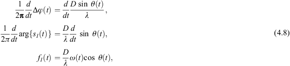
where  is the angular velocity, and
is the angular velocity, and  is the instantaneous frequency of the interferometric signal, which can be obtained applying time–frequency analysis methods, such as short-time Fourier transform (STFT), wavelet transform and Hilbert–Huang transform, to the interferometric measurement
is the instantaneous frequency of the interferometric signal, which can be obtained applying time–frequency analysis methods, such as short-time Fourier transform (STFT), wavelet transform and Hilbert–Huang transform, to the interferometric measurement
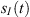
.Under the small angle assumption, that is the UAV target is moving within the area around the boresight direction, it can be regarded that
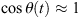
. And thus the angular velocity can be simply estimated as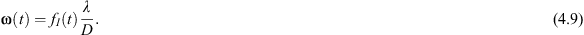
For those UAV targets with a large moving area, the effect of the angle term
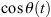
on interferometric frequency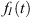
cannot be neglected. In this case, the angular velocity should be estimated using the exact formula as follows: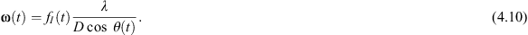
As we can see that, angle and angular velocity are coupled together in this scenario. To estimate the angular velocity, the angle has to be measured beforehand.
To conclude the method of angle and angular velocity measurement using interferometry, we first correlate the signals from two separate receivers and take the average to obtain the interferometric output. We then take the phase of the interferometric output and calculate the target angle per (4.7). Subsequently, time–frequency analysis is applied to the output and extracts the instantaneous interferometric frequency. Finally, we can calculate the angular velocity of the UAV target using either (4.8) or (4.10) based on the specific scenario.
Interferometry is a signal-processing mechanism and can be applied to any type of radar system, such as continuous wave (CW) radar, pulse radar and frequency-modulated continuous wave (FMCW) radar. The main concern with a CW radar is that it only provides velocity information and cannot estimate the relative distance between the UAV target and the observing radar. A pulse radar can be utilized for range estimation; however, its range resolution is relatively low due to the limited bandwidth restricted by sampling frequency. An FMCW radar achieves high-range resolution using small instantaneous transmit power, in turn associated with small size and weight, by continuously transmitting frequency modulated waveforms. For an FMCW radar, the range is calculated by estimating the frequency of the beat signal, which is the difference between the frequencies of received and transmitted signals, thus achieving large bandwidth (corresponds to high range resolution) regardless of sampling frequency. Therefore, the FMCW radar is especially suitable for applications that require high precision and portability, such as automotive radar and airborne radar. In the sequel, we extend the interferometry theory to an FMCW radar for UAV detection and tracking.
4.3 UAV detection
4.3.1 Range-Doppler processing
Detection of UAVs is accomplished based on a range-Doppler profile using an FMCW radar. Assume that the FMCW radar transmits a continuous linear frequency modulated signal with the carrier frequency
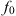
, bandwidth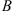
and sweep time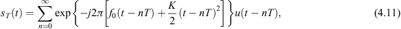
where
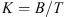
is the chirp rate, and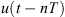
is a rectangular pulse with length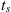
as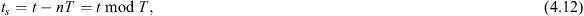
which is the time counting from the start of  th sweep period. Let us consider a UAV located at an initial distance of
th sweep period. Let us consider a UAV located at an initial distance of  and moving with a relative radial velocity of
and moving with a relative radial velocity of
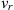
along radar LoS. The back-scattered signal from the UAV will have the same form, but with a delay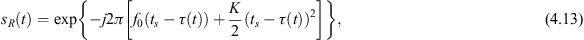
where the time delay
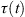
is expressed as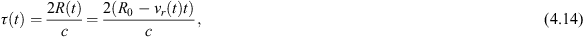
which is related to the range and radial velocity of the UAV. The UAV is usually assumed to locate in the same range gate within each pulse repetition period. Thus, the distance between the UAV and the radar can be approximated by
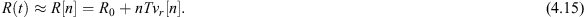
For a UAV target moving in the FoV of the FMCW radar, compared with the transmit signal, the received signal exhibits a delay induced by the range and a Doppler frequency shift induced by the radial velocity, as illustrated in Figure 4.2.
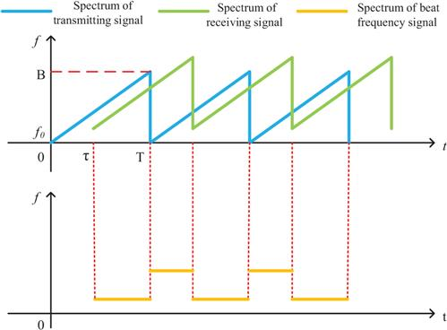
Figure 4.2 Frequency of transmitted signal and received signal (upper plot), the beat frequency signal (lower plot) after stretch processing
According to the FMCW radar principle, mixing the received signal by the first channel with the transmitted signal, we can obtain the beat signal. That is,
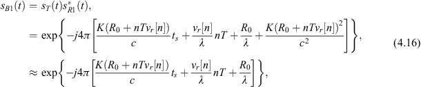
where
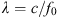
is the wavelength corresponds to carrier frequency. The approximation in (4.16) utilizes the fact that the denominator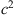
is much larger than the numerator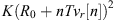
.We can observe from (4.16) that the range of the target in the  th pulse repetition period,
th pulse repetition period,
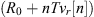
, is obtained by taking FFT of the beat frequency signal within pulses, also known as fast-time FFT. The Doppler frequency shift,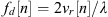
, is obtained by taking FFT over consecutive pulses, also known as slow-time FFT, supposing the velocity is constant over a CPI. Therefore, the range and radial velocity of the target can be estimated from the range-Doppler map by performing 2-D FFT on the beat signal. Figure 4.3 illustrates the range-Doppler map of a simulated target at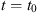
with an instantaneous range of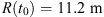
and moving with a radial velocity of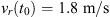
. The signal-to-noise ratio (SNR) of the simulated target is 10 dB. The colour bar shows the intensity of each range bin and radial velocity cell in dB.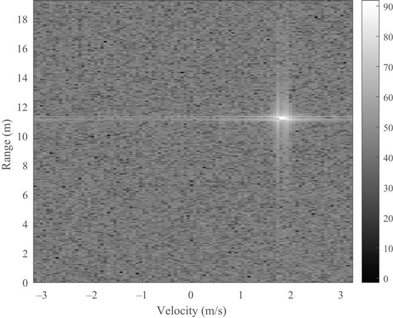
Figure 4.3 The range-Doppler map of the simulated moving target
4.3.2 CFAR detection
In order to complete the detection of UAV targets, a sequence of post-processing steps is also required. Detection of targets is usually accomplished by comparing the output signal power with a predefined threshold [30]. As the noise and clutter power varies with different velocity and range cells and changes over time as well, it is inappropriate to set a constant threshold for UAV detection. A typical constant false-alarm rate (CFAR) algorithm can be employed to the range-Doppler map for UAV detection, which can automatically adjust the threshold to keep the false-alarm rate constant even when the interference and noise level changes dynamically.
Here, we apply cell-averaging CFAR detector in both range and velocity dimensions. For each concerned test cell, we take some neighbouring cells as the training cells and assume that the training cells only consist of background noise and do not contain the signal backscattered from the target. Usually, the target occupies more than one cell, so it is necessary to insert some guard cells between the test cell and training cells to prevent signal power leakage. The relative positions of the test cell, guard cells and training cells are illustrated in Figure 4.4. Taking the average of the intensity of training cells, if the ratio between the intensity of the test cell and the averaged training cell is larger than the threshold, this test cell is preserved. Otherwise, its value is set to zero. If there are non-zero cells after CFAR processing, we consider that a target is detected in the corresponding test cell.
Figure 4.4 The illustration of CFAR
For the range-Doppler map in Figure 4.3, we apply CFAR detector in both range and velocity dimension. We set the size of guard cells as six cells and training cells as ten cells. The ratio threshold is 17 dB. Figure 4.5 shows the range-Doppler map after applying CFAR detector. The colour bar shows the intensity of each range and radial velocity cell in dB, and black colour indicates that the bin is set as zero by CFAR detector. We can observe that the noise is sufficiently suppressed and the cells containing the majority of the target energy are remained. Thus, this algorithm significantly reduces the false-alarm rate.
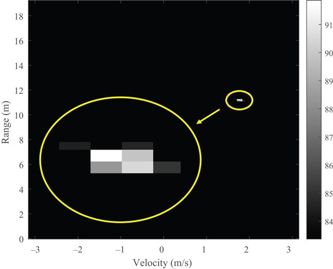
Figure 4.5 The range-Doppler map of the simulated moving target using a CFAR detector
4.3.3 Clustering
In practical applications, the modelled point scatterer of the UAV target might be perceived as an extended target from the range-Doppler map attributed to a few reasons, such as the sidelobe leakage of antenna beampattern, change of viewpoint, closeness to the observing radar and spectrum spreading induced by rotating rotors, etc. Put it differently, the reflected energy of the target will spread to the adjacent cells, all above the ratio threshold, resulting in the detection of the target in a number of range and velocity cells. In practical applications, we cannot simply treat each detected cell as an independent target. Otherwise, it will not only elevate system computational cost but also increase the false-alarm rate. Therefore, it is necessary to cluster closely spaced cells into one target and estimate the overall range and radial velocity of the target.
Here, we introduce a simple cell clustering algorithm. First, the cell with the highest intensity is located and chosen as the origin. Next, a target region is identified as the one adjacent to the origin cell by using four- or eight-connected criterion. Finally, the centroid is obtained by taking the intensity as the weight and performing a weighted average of the range and radial velocity in the target region. This weighted, averaged range and radial velocity corresponding to the centroid can be regarded as the final range and radial velocity of the target. Figure 4.6 illustrates the connected target region and the centroid of the simulated target using eight-connected criterion in the range-Doppler map after CFAR detection. We can see from Figure 4.6 that the clustered target accurately reflects the overall range and radial velocity of the true target. The procedure of UAV target detection is summarized in Figure 4.7.
Figure 4.6 Target condensation of the simulated moving target
Figure 4.7 Schematic diagram of UAV target detection process
4.4 UAV tracking
Tracking of UAVs is accomplished based on the acquired information of range, angle and 2-D velocity. The principle of UAV tracking is delineated in Figure 4.8. Suppose that there is a target moving along the curve trajectory as shown in Figure 4.8. The initial range and angle of the target are denoted as and at the time instant  . The linear velocity of the target describes the position changing rate and its direction is along the tangential of the trajectory curve, which can be decomposed into two components, one is along the radar LoS, referred to as radial velocity , and the other is perpendicular to the radar LoS, referred to as transversal velocity . The transversal velocity contributes to the angular displacement of the object relative to the antenna boresight, and the angular velocity is , linearly proportional to the transversal velocity, that is, . When the interval between two observations is small, the tangential line starting from the target position at time instant can be utilized to approximate the curve trajectory with an acceptable error, as illustrated in Figure 4.8. In summary, combining the information of target range, angle and 2-D velocity, namely radial and angular velocities, we are able to estimate the next position of the target, thus fulfilling the mission of UAV tracking.
. The linear velocity of the target describes the position changing rate and its direction is along the tangential of the trajectory curve, which can be decomposed into two components, one is along the radar LoS, referred to as radial velocity , and the other is perpendicular to the radar LoS, referred to as transversal velocity . The transversal velocity contributes to the angular displacement of the object relative to the antenna boresight, and the angular velocity is , linearly proportional to the transversal velocity, that is, . When the interval between two observations is small, the tangential line starting from the target position at time instant can be utilized to approximate the curve trajectory with an acceptable error, as illustrated in Figure 4.8. In summary, combining the information of target range, angle and 2-D velocity, namely radial and angular velocities, we are able to estimate the next position of the target, thus fulfilling the mission of UAV tracking.
Figure 4.8 The illustration of UAV tracking principle
As explained in Section 4.2, a single-receiver FMCW radar can only measure the range and radial velocity of the target relative to the radar and could not provide the 2-D information. Therefore, we utilize interferometric FMCW radar to simultaneously measure both the radial and transversal parameters, including position and velocity [31], delineated as follows.
4.4.1 Range and angle
It is worth to note that we implement 2-D FFT to obtain the range-Doppler map in the detection step, where a large processing gain can be secured by the long-time accumulation. While, in the tracking step, the timely update of both the range and radial velocity is required, which implies the window length of signal-processing frame needs to be shortened.
If we take the transmitter as a reference, the range of the target relative to the transmitter can be determined by a simple geometrical relationship, as shown in Figure 4.9. That is,
where  is the range of the UAV target relative to the transmitter in th chirp, the range is the distance from the transmitter to the target then back to the
is the range of the UAV target relative to the transmitter in th chirp, the range is the distance from the transmitter to the target then back to the  th receiver, and thus are the range of the UAV target relative to two receivers. And is the distance between transmitter and receiver. We can then solve for , which can be expressed by the following expression:
th receiver, and thus are the range of the UAV target relative to two receivers. And is the distance between transmitter and receiver. We can then solve for , which can be expressed by the following expression:
Figure 4.9 The geometry of the interferometric radar
We can also derive the angle of the target with respect to the transmitter. That is,
where ranges from to .
If the target satisfies the far-field condition, that is, , the wave-front of target reflected signal is planar and the propagation path can be considered parallel. In this scenario, the triangular geometrical relationship in Figure 4.9 can be approximated by Figure 4.10.
Figure 4.10 The geometry of the interferometric radar under far-field condition
We can observe that, if the transmitter is placed in the middle of two receivers, the ranges from the target to the transmitter and receivers have the following relationship,:
Therefore, the range of the target can be approximated by
We also notice that angle  can be approximately calculated by the following equation:
can be approximately calculated by the following equation:
Note that (4.7) and (4.22) are essentially the same as the range difference is linearly proportional to the phase difference between two receiving channels, while (4.22) eliminates the phase ambiguity and argument operation.
In real implementation, we can estimate the return range, , by performing fast-time FFT to the beat signals corresponding to two receivers. For receiver , beat signal is first reshaped into an matrix , where  is the sampling points in one chirp, and is the chirp number. That is,
is the sampling points in one chirp, and is the chirp number. That is,
Then, for every chirp , we perform FFT to obtain the frequency with the maximum magnitude. The return range can then be estimated by
Substituting (4.24) into (4.21) and (4.22) yields the timely range  and angle
and angle  , both with respect to the transmitter, respectively. We can then determine the 2-D position information of the target and perform UAV target tracking. However, only considering the first-order motion information is not reliable and robust, especially for agile UAVs with high manoeuvrability. As explained in Section 4.2, additional second-order information can be inferred from the reflected signal, including radial and angular velocities, we can add them to the target-tracking process and improve tracking performance.
, both with respect to the transmitter, respectively. We can then determine the 2-D position information of the target and perform UAV target tracking. However, only considering the first-order motion information is not reliable and robust, especially for agile UAVs with high manoeuvrability. As explained in Section 4.2, additional second-order information can be inferred from the reflected signal, including radial and angular velocities, we can add them to the target-tracking process and improve tracking performance.
4.4.2 2-D velocity
Different from the detection stage, where a long-time accumulation is conducted to secure the processing gain, target tracking requires a timely update of the motion information. Therefore, STFT is usually employed instead of FFT. STFT is a conventional method that characterizes the frequency distribution of the signal versus time, which is defined as
where is the discrete signal,  is the unit time delay of the sliding window,
is the unit time delay of the sliding window,  indicates an integer multiple of unit time delay, a rectangular sliding window is defined as
indicates an integer multiple of unit time delay, a rectangular sliding window is defined as
where  is the size of the window. Note that the sliding window length
is the size of the window. Note that the sliding window length  determines the trade-off between time and frequency resolution, which obeys the classic ‘Uncertainty Principle’. Also, when
determines the trade-off between time and frequency resolution, which obeys the classic ‘Uncertainty Principle’. Also, when  is large, STFT is equivalent to FFT with a large accumulation gain while sacrificing the information updating rate.
is large, STFT is equivalent to FFT with a large accumulation gain while sacrificing the information updating rate.
As shown in (4.16), which is copied again as follows:
We can observe that range profile can be obtained by applying fast-time FFT to each pulse, and then STFT is performed to the concerned range bins to attain the Doppler spectrogram. Finally, the amplitude of the spectrograms corresponding to the range bins are added up, which constitutes the final spectrogram. That is,
where denotes absolute value. The illustration of this process is shown in Figure 4.11.
Figure 4.11 The illustration of Doppler spectrogram generation process
The Doppler frequency of the UAV target in the th sliding window received by the  th antenna can be extracted from the spectrogram by cell averaging algorithm introduced in Section 4.3.3. Then the radial velocity with respect to the
th antenna can be extracted from the spectrogram by cell averaging algorithm introduced in Section 4.3.3. Then the radial velocity with respect to the  th receiver can be determined by
th receiver can be determined by
In order to reduce the measurement error, we average the radial velocity estimates obtained by the two receivers. The final radial velocity estimate is
Next, we estimate the angular velocity of the UAV target. The interferometry principle introduced in Section 4.2 is still applied here. Proceeding from (4.16), the beat frequency signal of the second antenna can be written as
The two beat signals in (4.16) and (4.31) are correlated in the interferometer, generating the response,
Under the small angle assumption, where the angle of the UAV target is kept near the boresight direction, (4.32) can be rewritten as
We can argue from (4.33) that angle profile can be obtained by applying fast-time FFT to each pulse, and then STFT is performed to the concerned angle bins to attain the interferometric spectrogram. Finally, the amplitudes of the spectrograms corresponding to the  angle bins are added up, which constitutes the final spectrogram. Specifically, we first reshape the interferometric signal into an matrix , where is the sampling points in one period, and
angle bins are added up, which constitutes the final spectrogram. Specifically, we first reshape the interferometric signal into an matrix , where is the sampling points in one period, and  is chirp number. That is,
is chirp number. That is,
Then, for every period , we perform fast-time FFT to extract the frequency , and the angle can be estimated as
After obtaining the angle profile, we can extract the angular velocity of the UAV target using the similar method for radial velocity. We first select a series of angle bins which we concern about and perform STFT to these angle bins, respectively. The interested angle bins are usually determined by the monitoring area, or the radar beam width. Then, we perform STFT to these angle bins, respectively, add up the absolute value of the spectrograms corresponding to all  bins and obtain the final interferometric spectrogram. That is,
bins and obtain the final interferometric spectrogram. That is,
The spectrogram shows the time-varying interferometric frequency of the UAV target, then the angular velocity can be determined by
which is consistent with (4.9). We refer to (4.35) and (4.38) as the pre-interferometry method.
By comparing the estimation methods of range and radial velocity with those of angle and angular velocity, we conclude that the two pairs are mathematical duals in terms of range corresponding to angle and radial velocity corresponding to angular velocity. This observation inspires another post-interferometry method of estimating angle and angular velocity, specifically,
and
In practical implementation, we prefer the post-interferometry method of (4.39) and (4.40), due to its simplicity and robustness against the noise.
4.4.3 Kalman filtering
Tracking is responsible for the track maintenance and termination of the detected UAV target. To cope with the noisy output of the detector, we use the well-known Kalman filtering to recursively predict the state variables over time from measurements and assumptions about the dynamics of the tracked object [15,32,33]. The radar measurements are somewhat inaccurate and may not be continuous in every frame. Kalman filtering helps by smoothing the inaccurate measurements and trying to predict the real values before updating the track. In this work, the state vector of the Kalman filter contains the 2-D position and velocity. Consider the state of the UAV target is consecutively measured and updated with a time interval . The th state of the target can be expressed as
An estimate of the state is denoted as . Since there is no known control input, the state at current instant can be expressed as
where is the state transition matrix defined as
And is the process noise with covariance  . In the continuous white noise acceleration motion model [34], the covariance obeys
. In the continuous white noise acceleration motion model [34], the covariance obeys
where  is the time interval between consecutive measurements, and the process noise is determined by the motion feature of the target.
is the time interval between consecutive measurements, and the process noise is determined by the motion feature of the target.
An estimation of the state is predicted by the previous state,
and the predict error covariance is given by
where is the estimate covariance.
The state is updated by the measurement via an observation matrix , which represents the 2-D position and velocity in this scenario, that is,
The optimal Kalman gain is then
where is the covariance of the observation noise.
Since fast-time data is used for the position estimation and slow-time data is used for velocity estimation, the measurements of position and velocity are assumed uncorrelated.
The updated state estimate is determined by
where is the measurement at time step  . The estimate covariance is then updated according to
. The estimate covariance is then updated according to
The proposed tracking algorithm based on the 2-D position and velocity information is summarized as follows. First, an interferometric FMCW radar monitors the interested region and obtains the range-Doppler map by implementing 2-D FFT on the received beat signal to obtain the range-Doppler map. Then, a CFAR detector is used to reduce the false-alarm rate and reliably detect the target. Next, cell clustering is performed to obtain the range and radial velocity of the overall target motion, which further reduces the false-alarm rate. Once the target is detected, we perform fast-time FFT and STFT to the received beat signals from two receivers, respectively, and extract the timely information of range, radial velocity, azimuth angle and angular velocity. Finally, we input these measurements into a Kalman filter and predict the trajectory of the UAV target. According to the estimation methods of angle and angular velocity, we summarize two tracking procedures, referred to as pre-interferometry tracking and post-interferometry tracking. The former utilizes (4.35) and (4.38) to estimate the angle and angular velocity, while the latter utilizes (4.39) and (4.40) for estimation. The two tracking procedures are illustrated in Figures 4.12 and 4.13, respectively.
Figure 4.12 Schematic diagram of pre-interferometry tracking method
Figure 4.13 Schematic diagram of post-interferometry tracking method
4.5 Simulation results
To better explain and validate the algorithm in Section 4.4, we simulate a target rotating in front of the radar as an example. The radar operates at the carrier frequency of  and transmits a linear frequency modulated wave with a bandwidth of . The chirp duration , and the sampling rate . The total data length is 10 s, and the SNR is set as 10 dB. The two receivers are placed with a baseline . The transmitter, taken as a reference, is located at the origin of coordinate system (0,0) (m), and the receivers are located at (m) and (m), respectively. The rotation centre of the target is (10,0) (m), and the target moves on a trajectory of an ellipse with angular velocity with respect to the observing radar of . The theoretical trajectory is described by the following equation:
and transmits a linear frequency modulated wave with a bandwidth of . The chirp duration , and the sampling rate . The total data length is 10 s, and the SNR is set as 10 dB. The two receivers are placed with a baseline . The transmitter, taken as a reference, is located at the origin of coordinate system (0,0) (m), and the receivers are located at (m) and (m), respectively. The rotation centre of the target is (10,0) (m), and the target moves on a trajectory of an ellipse with angular velocity with respect to the observing radar of . The theoretical trajectory is described by the following equation:
The simulational set-ups are illustrated in Figure 4.14. The true range, radial velocity, angle and angular velocity of the target are plotted in Figure 4.15.
Figure 4.14 The set-ups of simulation
Figure 4.15 The true location and velocity of the simulated target: (a) radial and (b) angular
We first reshape the received signals and perform 256-point fast-time FFT to obtain the range profile of two receivers per (4.24), which are shown in Figure 4.16. The range in Figure 4.16 represents from the transmitter to the target then back to the  th receiver. All of the colour bars in Figure 4.16 represent the intensity in unit of dB. After obtaining the range profiles, we perform STFT to estimate Doppler frequencies, thus radial velocity. In the simulation, we add up all 256 range bins to calculate the spectrograms. Figure 4.17 presents the spectrograms of radial velocity corresponding to two receivers. From the spectrograms of range and radial velocity, we can extract the overall range and radial velocity of the target by picking up the value of maximum intensity, as shown in Figure 4.19(a). Similarly, we obtain the angle profile and spectrogram of angular velocity in Figure 4.18, where the overall angle and angular velocity are estimated, as shown in Figure 4.19(b).
th receiver. All of the colour bars in Figure 4.16 represent the intensity in unit of dB. After obtaining the range profiles, we perform STFT to estimate Doppler frequencies, thus radial velocity. In the simulation, we add up all 256 range bins to calculate the spectrograms. Figure 4.17 presents the spectrograms of radial velocity corresponding to two receivers. From the spectrograms of range and radial velocity, we can extract the overall range and radial velocity of the target by picking up the value of maximum intensity, as shown in Figure 4.19(a). Similarly, we obtain the angle profile and spectrogram of angular velocity in Figure 4.18, where the overall angle and angular velocity are estimated, as shown in Figure 4.19(b).
Figure 4.16 The range profiles of the simulated target: (a) receiver 1 and (b) receiver 2
Figure 4.17 The spectrograms of the simulated target: (a) receiver 1 and (b) receiver 2
Figure 4.18 (a) The angle profile and (b) spectrogram of angular velocity of the simulated target
Figure 4.19 The estimated location and velocity of the simulated target: (a) radial and (b) angular
With four 2-D parameters, including range, radial velocity, angle and angular velocity ready, we then apply Kalman filtering to the noisy measurement and estimate the trajectory of the target. Parameters of the employed Kalman filter are set as follows: the process noise is and the variance of the observation noise is a diagonal matrix with populating along the diagonal. The Kalman filtered range, radial velocity, angle and angular velocity are depicted in Figure 4.20. It clearly shows that the Kalman filter can effectively alleviate the effect of noise and quantization error and smooth the measurements. The estimated 2-D trajectory is plotted in Figure 4.21, which approaches the true trajectory of the simulated target.
Figure 4.20 The estimated location and velocity of the simulated target: (a) range, (b) radial velocity, (c) azimuth angle, (d) angular velocity
Figure 4.21 Estimated and true trajectory of the simulated target
4.6 Experimental results
We employed a small plastic UAV as the target to test the detection and tracking performance of the proposed algorithm in real experiments. The picture of UAV is shown in Figure 4.22 and the RCS is super small. The maximum flying time is only 2 min, which significantly affects the field experiment. The experiment is conducted indoor with a maximum distance of 30 m due to the UAV control. An FMCW interferometric radar with a carrier frequency of , the bandwidth of and sweeping time of  is employed in the experiment. The UAV was controlled to move back and forth travelling along a straight line with an azimuth angle of with respect to radar LoS. It is difficult to stabilize the flying attitude and flying path of the UAV, especially in indoor environment. The antennas are steering towards by hand such that the UAV can remain staying in the radar main beam for maximum directional gain. The two receivers are placed on the two sides of transmitter by 0.65 m apart, and thus the baseline between the two receivers is . The experimental set-up is shown in Figure 4.23.
is employed in the experiment. The UAV was controlled to move back and forth travelling along a straight line with an azimuth angle of with respect to radar LoS. It is difficult to stabilize the flying attitude and flying path of the UAV, especially in indoor environment. The antennas are steering towards by hand such that the UAV can remain staying in the radar main beam for maximum directional gain. The two receivers are placed on the two sides of transmitter by 0.65 m apart, and thus the baseline between the two receivers is . The experimental set-up is shown in Figure 4.23.
Figure 4.22 The picture of the small plastic UAV
Figure 4.23 The set-up of indoor flying experiment
The detection performance of the small UAV is first tested using both simulated and experimental data. The simulation scenario is set as the same as that of the experimental set-up for comparison. The 2-D FFT is implemented on a total of 256 chirps to obtain the range-Doppler map for UAV detection. The distance between the UAV and the radar is varying from 5 to 65 m in varied steps. The detection probabilities of the UAV versus different distances are listed in Table 4.1 using both simulated and experimental data. We can obverse that experimental results agree well with simulation results, and the detection probability decreases dramatically when the distance is larger than 40 m attributed to the super small RCS (around ) of the employed UAV model.
Table 4.1 Detection probability of UAV using simulated and experimental data
| Distance (m) | Simulation (%) | Experiment (%) |
|---|---|---|
| 5 | 100 | 100 |
| 10 | 100 | 100 |
| 15 | 100 | 100 |
| 30 | 99.9 | 80 |
| 40 | 52.8 | 50 |
| 50 | 30.1 | 25 |
| 65 | 0.4 | 0 |
After collecting the received signals with a length of 20 s and implementing fast-time FFT, we obtained the range profile of the UAV target, which is presented in Figure 4.24. We can observe from the range profile of Figure 4.24 that the UAV target moves back and forth relative to the radar, which agrees with the real situation. Considering the radial-velocity profile, we selected range cells between 0 and 8 m and performed STFT for each range bin. The summation of spectrograms formulated the overall Doppler spectrogram containing the radial velocity of the UAV target, which is shown in Figure 4.25. The positive and negative velocities also indicate that the UAV target moved towards and away from the observing radar.
Figure 4.24 The range profiles of the real UAV target: (a) receiver 1 and (b) receiver 2
Figure 4.25 The spectrograms of the real UAV target: (a) receiver 1 and (b) receiver 2
The range, angle, radial and angular velocity are further extracted, as shown in Figure 4.26(a) and (b) using the proposed post-interferometry method. Finally, we extract 2-D position and velocity information and estimate the trajectory of the UAV target. Parameters of the employed Kalman filter are as follows: the process noise is and the variance of the observation noise is diagonal with populating along the diagonal. The predicted tracking path is depicted in Figure 4.27, which agrees well with the real flight trajectory. The experiment validates the feasibility and effectiveness of the proposed method.
Figure 4.26 The estimated location and velocity of the UAV target: (a) radial and (b) angular
Figure 4.27 The estimated trajectory of the UAV target: (a) trajectory and (b) position versus time
4.7 Conclusion and future work
To conclude, interferometric processing of two widely spaced receivers enabled the extraction of 2-D position and velocity of UAV targets, that is, along the radial and transversal direction. Applying Kalman filtering to the estimated time-varying 2-D information, we were able to perform UAV detection and tracking. Simulations and experiments validated the proposed method. However, UAVs usually move in three-dimensional (3-D) space. In order to achieve real-time positioning of UAVs, parameters in azimuth and elevation are required simultaneously. The proposed work can be easily extended to 3-D space tracking by employing another receiver placed vertically above the transmitter (an optional fourth receiver placed vertically under the transmitter), as illustrated in Figure 4.28. The extension of the proposed work to the 3-D UAV detection and tracking will be explored in the near future.
Figure 4.28 Configuration for UAV detection and tracking in 3-D space
References
[1] Wang X, Liang H, and Wang P. Detection and tracking of UAVs using interferometric radar. In: 2019 International Radar Conference (RADAR). IEEE; 2019. p. 1–6.
[2] Liang H, Wang P, and Wang X. Simultaneous tracking of multiple targets using interferometric FMCW radar. In: 2019 IEEE International Conference on Signal, Information and Data Processing (ICSIDP). IEEE; 2019. p. 1–6.
[3] Fioranelli F, Ritchie M, Griffiths H, et al. Classification of loaded/unloaded micro-drones using multistatic radar. Electronics Letters. 2015;51(22):1813–1815.
[4] Ritchie M, Fioranelli F, and Borrion H. Micro UAV crime prevention: can we help Princess Leia? In: Crime Prevention in the 21st Century. Cham: Springer International Publishing AG; 2017. p. 359–376.
[5] Drozdowicz J, Wielgo M, Samczynski P, et al. 35 GHz FMCW drone detection system. In: 2016 17th International Radar Symposium (IRS). IEEE; 2016. p. 1–4.
[6] Chen VC, Li F, Ho SS, et al. Micro-Doppler effect in radar: phenomenon, model, and simulation study. IEEE Transactions on Aerospace and Electronic Systems. 2006;42(1):2–21.
[7] de Wit JM, Harmanny R, and Premel-Cabic G. Micro-Doppler analysis of small UAVs. In: 2012 9th European Radar Conference. IEEE; 2012. p. 210–213.
[8] Tahmoush D. Detection of small UAV helicopters using micro-Doppler. In: Radar Sensor Technology XVIII. vol. 9077. International Society for Optics and Photonics; 2014. p. 907717.
[9] Björklund S. Target detection and classification of small drones by boosting on radar micro-Doppler. In: 2018 15th European Radar Conference (EuRAD). IEEE; 2018. p. 182–185.
[10] Harmanny R, De Wit J, and Cabic GP. Radar micro-Doppler feature extraction using the spectrogram and the cepstrogram. In: 2014 11th European Radar Conference. IEEE; 2014. p. 165–168.
[11] Ritchie M, Fioranelli F, Griffiths H, et al. Micro-drone RCS analysis. In: 2015 IEEE Radar Conference. IEEE; 2015. p. 452–456.
[12] Ritchie M, Fioranelli F, Griffiths H, et al. Monostatic and bistatic radar measurements of birds and micro-drone. In: 2016 IEEE Radar Conference (RadarConf). IEEE; 2016.
[13] Wang X, Wang P, and Chen VC. Simultaneous measurement of radial and transversal velocities using interferometric radar. IEEE Transactions on Aerospace and Electronic Systems. 2019.
[14] Wang X, Wang P, Cao X, et al. Interferometric angular velocity measurement of rotating blades: theoretical analysis, modeling and simulation study. IET Radar, Sonar & Navigation. 2018;13(3):438–444.
[15] Hoffmann F, Ritchie M, Fioranelli F, et al. Micro-Doppler based detection and tracking of UAVs with multistatic radar. In: 2016 IEEE Radar Conference (RadarConf). IEEE; 2016. p. 1–6.
[16] Jian M, Lu Z, and Chen VC. Drone detection and tracking based on phase-interferometric Doppler radar. In: 2018 IEEE Radar Conference (RadarConf18). IEEE; 2018. p. 1146–1149.
[17] Klare J, Biallawons O, and Cerutti-Maori D. Detection of UAVs using the MIMO radar MIRA-CLE Ka. In: Proceedings of EUSAR 2016: 11th European Conference on Synthetic Aperture Radar. VDE; 2016. p. 1–4.
[18] Rankin G, Tirkel A, and Leukhin A. Millimeter wave array for UAV imaging MIMO radar. In: 2015 16th International Radar Symposium (IRS). IEEE; 2015. p. 499–504.
[19] Nanzer JA. Micro-motion signatures in radar angular velocity measurements. In: 2016 IEEE Radar Conference (RadarConf). IEEE; 2016. p. 1–4.
[20] Wang X, Wang P, and Chen VC. Simultaneous measurement of radial and transversal velocities using a dual-frequency interferometric radar. In: 2019 IEEE Radar Conference (RadarConf). IEEE; 2019. p. 1–6.
[21] Holder J. Angle-of-Arrival Estimation Using Radar Interferometry: Methods and Applications. vol. 2. Edison, NJ: SciTech Publishing; 2013.
[22] Mollai S and Farzaneh F. Compact cross form antenna arrays intended for wideband two dimensional interferometric direction finding including the channel phase tracking error. AEU-International Journal of Electronics and Communications. 2018;83:558–565.
[23] Van Doan S, Vesely J, Janu P, et al. Optimized algorithm for solving phase interferometer ambiguity. In: 2016 17th International Radar Symposium (IRS). IEEE; 2016. p. 1–6.
[24] Ly PQ, Elton SD, Li J, et al. Computationally fast AOA estimation using sparse large aperture arrays for electronic surveillance. In: 2013 International Conference on Radar. IEEE; 2013. p. 526–531.
[25] Ly PQ, Elton SD, Gray DA, et al. Unambiguous AOA estimation using SODA interferometry for electronic surveillance. In: 2012 IEEE 7th Sensor Array and Multichannel Signal Processing Workshop (SAM). IEEE; 2012. p. 277–280.
[26] Lin E and Monte L. Joint frequency and angle of arrival estimation using the Chinese Remainder Theorem. In: 2017 IEEE Radar Conference (RadarConf). IEEE; 2017. p. 1547–1551.
[27] Jacobs E and Ralston EW. Ambiguity resolution in interferometry. IEEE Transactions on Aerospace and Electronic Systems. 1981; AES-17(6):766–780.
[28] Searle S. An examination of bias in SODA interferometry. IEEE Signal Processing Letters. 2017;24(4):470–474.
[29] Liang H, Wang X, and Farina A. Performance analysis and optimal placement for unambiguous DOA estimation using interferometry. In: 2020 IEEE Radar Conference (RadarConf). Florence, Italy; 2020. p. 1–6.
[30] Chen WK. The VLSI Handbook. New York, NY: CRC Press; 2018.
[31] Nanzer JA. Interferometric detection of the angular velocity of moving objects. In: 2010 IEEE MTT-S International Microwave Symposium. IEEE; 2010. p. 1628–1631.
[32] Fuhrmann L, Biallawons O, Klare J, et al. Micro-Doppler analysis and classification of UAVs at Ka band2. IEEE; 2017. p. 1–9.
[33] Wang X and Lu X. Three-dimensional impact angle constrained distributed guidance law design for cooperative attacks. ISA Transactions. 2018;73:79–90.
[34] Bar-Shalom Y, Li XR, and Kirubarajan T. Estimation With Applications to Tracking and Navigation: Theory Algorithms and Software. New York, NY: John Wiley & Sons; 2004.
*Portions reprinted, with permission, from References [1,2].
1School of Electronics and Information Engineering, Beihang University, Beijing, China